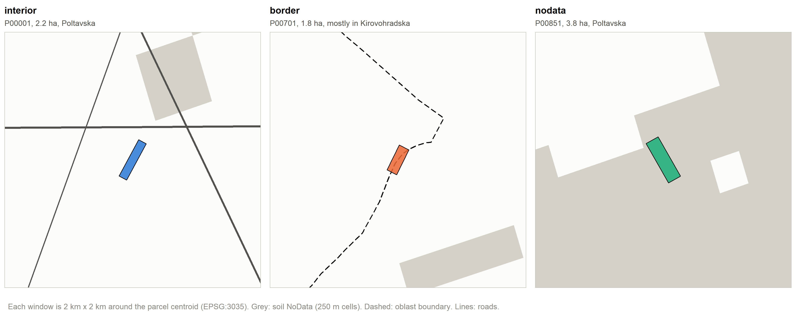

# 01-simulate-reference.R
# In: data/interim/oblasts.gpkg, clay_0-5cm_mean.tif (soil NoData cells), crop_2024 (only to check towns and water)
# Out: data/clean/reference/parcels.parquet, elevators.parquet, roads.parquet (GeoParquet, EPSG:4326)
# Purpose: simulate the fixed reference parcels, elevators and roads in Poltava oblast.
# This script ran once to create the committed reference inputs. It is not part of the normal run.
source("00-setup.R")
if (file.exists(parcels_path)) cli_abort("Reference inputs already exist. They are fixed: do not regenerate.")
set.seed(20261110)
# Study oblast and its neighbours, in metres ----------------------------------
oblasts <- st_read(oblasts_path, quiet = TRUE) |> st_transform(crs_work)
poltava <- oblasts |> filter(oblast_en == study_oblast_en)
neighbours <- oblasts |> filter(lengths(st_touches(oblasts, poltava)) > 0)
poltava_inner <- st_buffer(poltava, -1000) # Poltava shrunk by 1 km
cli_inform("{study_oblast_en} has {nrow(neighbours)} neighbouring oblasts.")
# Parcel centres --------------------------------------------------------------
# interior: random points more than 1 km from Poltava's boundary
interior <- st_sample(poltava, 900) |>
st_as_sf() |>
st_filter(poltava_inner) |>
slice_head(n = 700) |>
mutate(case = "interior")
# border: random points on the boundary Poltava shares with its neighbours
shared_boundary <- st_intersection(st_boundary(st_geometry(poltava)), st_union(neighbours)) |>
st_line_merge() # one line, so that st_sample() spreads the points along its whole length
border <- st_sample(shared_boundary, 150, type = "random", exact = TRUE) |>
st_as_sf() |>
st_cast("POINT") |>
slice_head(n = 150) |>
mutate(case = "border")
# nodata: random soil NoData cells (towns, rivers, reservoir) inside Poltava shrunk by 1 km
clay <- rast(file.path(soil_dir, "clay_0-5cm_mean.tif"))
clay_crop <- crop(clay, st_transform(poltava_inner, crs(clay)))
soil_na_cells <- ifel(is.na(clay_crop), 1, NA) # 1 on soil NoData, NA elsewhere
nodata_cells <- spatSample(soil_na_cells, size = 5000, method = "random", na.rm = TRUE, as.points = TRUE) |>
st_as_sf() |>
st_transform(crs_work) |>
st_filter(poltava_inner) |>
slice_sample(n = 150)
# shift each nodata centre by at most 100 m in a random direction
shift_m <- runif(150, 0, 100)
shift_angle <- runif(150, 0, 2 * pi)
nodata_xy <- st_coordinates(nodata_cells)
nodata <- tibble(
case = "nodata",
x = nodata_xy[, "X"] + shift_m * cos(shift_angle),
y = nodata_xy[, "Y"] + shift_m * sin(shift_angle)
) |>
st_as_sf(coords = c("x", "y"), crs = crs_work)
centres <- bind_rows(
interior |> st_set_geometry("geometry"),
border |> st_set_geometry("geometry"),
nodata
)
centres_xy <- st_coordinates(centres)
# Parcel shapes: unit square -> scale -> shear -> rotate -> translate ---------
shapes <- tibble(
case = centres$case,
x = centres_xy[, "X"],
y = centres_xy[, "Y"]
) |>
mutate(
area_target = pmin(pmax(rlnorm(n(), log(3), 0.25), 1), 10), # hectares
ratio = runif(n(), 1.5, 6),
angle = runif(n(), 0, pi),
shear = if_else(runif(n()) < 0.5, 0, runif(n(), 0.2, 0.5))
)
shapes$geometry <- pmap(
list(shapes$x, shapes$y, shapes$area_target, shapes$ratio, shapes$angle, shapes$shear),
\(x, y, area_target, ratio, angle, shear) {
square <- matrix(c(-0.5, -0.5, 0.5, -0.5, 0.5, 0.5, -0.5, 0.5, -0.5, -0.5), ncol = 2, byrow = TRUE)
width <- sqrt(area_target * 10000 / ratio)
scaled <- square %*% diag(c(width * ratio, width))
sheared <- scaled %*% matrix(c(1, 0, shear, 1), ncol = 2) # y + shear * x keeps the area
rotated <- sheared %*% matrix(c(cos(angle), -sin(angle), sin(angle), cos(angle)), ncol = 2)
st_polygon(list(sweep(rotated, 2, c(x, y), "+")))
}
) |>
st_sfc(crs = crs_work)
parcels <- shapes |>
st_as_sf() |>
mutate(
parcel_id = sprintf("P%05d", row_number()),
area_ha = as.numeric(st_area(geometry)) / 10000
) |>
select(parcel_id, case, area_ha)
# Oblast with the largest overlap
parcel_oblast <- st_intersection(parcels, select(oblasts, oblast_en)) |>
mutate(overlap = as.numeric(st_area(geometry))) |>
st_drop_geometry() |>
group_by(parcel_id) |>
slice_max(overlap, n = 1, with_ties = FALSE) |>
ungroup() |>
select(parcel_id, oblast = oblast_en)
parcels <- parcels |> left_join(parcel_oblast, by = "parcel_id")
# H3 cells of the WGS84 centroid
parcels_4326 <- st_transform(parcels, 4326)
centroids_4326 <- st_centroid(st_geometry(parcels_4326))
parcels_4326 <- parcels_4326 |>
mutate(
h3_6 = h3o::h3_from_points(centroids_4326, 6) |> as.character(),
h3_5 = h3o::h3_from_points(centroids_4326, 5) |> as.character()
) |>
select(parcel_id, case, area_ha, oblast, h3_6, h3_5)
# Elevators -------------------------------------------------------------------
elevators <- st_sample(poltava, 30) |>
st_as_sf() |>
st_set_geometry("geometry") |>
mutate(elevator_id = sprintf("E%03d", row_number())) |>
select(elevator_id)
# Roads -----------------------------------------------------------------------
# main: 40 candidate straight lines between random points on Poltava's boundary.
# After clipping to Poltava, the 4 longest are kept, so every main road crosses Poltava.
main_ends <- st_sample(st_line_merge(st_boundary(st_geometry(poltava))), 80, type = "random", exact = TRUE) |>
st_cast("POINT") |>
st_coordinates()
main_roads <- tibble(
road_id = rep(sprintf("C%02d", 1:40), each = 2),
type = "main",
x = main_ends[1:80, "X"],
y = main_ends[1:80, "Y"]
) |>
st_as_sf(coords = c("x", "y"), crs = crs_work) |>
group_by(road_id, type) |>
summarise(do_union = FALSE, .groups = "drop") |>
st_cast("LINESTRING") |>
st_intersection(st_geometry(poltava)) |> # a road that leaves Poltava and comes back becomes a MULTILINESTRING
st_collection_extract("LINESTRING") |> # drop stray points from the clipping
mutate(length_m = as.numeric(st_length(geometry))) |>
slice_max(length_m, n = 4, with_ties = FALSE) |>
mutate(road_id = sprintf("M%02d", row_number()))
# local: 50 lines of 5-20 km from random points inside Poltava, in a random direction
local_starts <- st_coordinates(st_sample(poltava, 50))
local_length <- runif(50, 5000, 20000)
local_angle <- runif(50, 0, 2 * pi)
local_roads <- bind_rows(
tibble(road_id = sprintf("L%02d", 1:50), x = local_starts[, "X"], y = local_starts[, "Y"]),
tibble(
road_id = sprintf("L%02d", 1:50),
x = local_starts[, "X"] + local_length * cos(local_angle),
y = local_starts[, "Y"] + local_length * sin(local_angle)
)
) |>
arrange(road_id) |>
mutate(type = "local") |>
st_as_sf(coords = c("x", "y"), crs = crs_work) |>
group_by(road_id, type) |>
summarise(do_union = FALSE, .groups = "drop") |>
st_cast("LINESTRING") |>
st_intersection(st_geometry(poltava))
# densify to 950 m here, so that segments stay under 1 km on the sphere too
roads <- bind_rows(main_roads, local_roads) |>
st_segmentize(dfMaxLength = 950) |>
select(road_id, type)
# Summaries -------------------------------------------------------------------
print(count(st_drop_geometry(parcels_4326), case))
print(summary(parcels_4326$area_ha))
print(count(st_drop_geometry(roads), type))
# Checks ----------------------------------------------------------------------
share_2_4_ha <- mean(parcels_4326$area_ha >= 2 & parcels_4326$area_ha <= 4)
cli_inform("{round(100 * share_2_4_ha, 1)}% of parcels are 2-4 ha (75% or more expected).")
if (share_2_4_ha < 0.75) cli_abort("Too few parcels of 2-4 ha.")
if (any(parcels_4326$area_ha < 1 | parcels_4326$area_ha > 10)) cli_abort("Parcel areas must be 1-10 ha.")
if (n_distinct(parcels_4326$parcel_id) != n_parcels) cli_abort("Parcel IDs are not unique.")
if (!all(st_is_valid(parcels_4326))) cli_abort("Some parcel geometries are invalid.")
border_parcels <- parcels |> filter(case == "border")
border_in_poltava <- lengths(st_intersects(border_parcels, poltava)) > 0
border_in_neighbour <- lengths(st_intersects(border_parcels, neighbours)) > 0
cli_inform("{sum(border_in_poltava & border_in_neighbour)} of {nrow(border_parcels)} border parcels cross into a neighbouring oblast.")
if (!all(border_in_poltava & border_in_neighbour)) cli_abort("Every border parcel must touch Poltava and a neighbour.")
# Share of each nodata parcel on soil NoData
nodata_parcels <- parcels |> filter(case == "nodata")
soil_na_share <- exact_extract(is.na(clay_crop), st_transform(nodata_parcels, crs(clay)), "mean", progress = FALSE)
share_mostly_na <- mean(soil_na_share > 0.5)
cli_inform("{round(100 * share_mostly_na, 1)}% of nodata parcels are more than half on soil NoData (70% or more expected).")
if (share_mostly_na < 0.7) cli_abort("Too few nodata parcels on soil NoData.")
# Towns and water around nodata parcels, from the 2024 crop map
crop24 <- rast(crop_2024)
nodata_crop <- st_transform(nodata_parcels, crs(crop24))
crop_majority <- exact_extract(crop24, nodata_crop, "mode", progress = FALSE)
crop_near <- exact_extract(crop24, st_buffer(nodata_crop, 500), "frac", progress = FALSE)
n_town <- sum(crop_majority == 1, na.rm = TRUE)
n_water <- sum(crop_near$frac_13 + crop_near$frac_14 > 0, na.rm = TRUE)
cli_inform("{n_town} nodata parcels are mostly built (code 1) in 2024; {n_water} have water within 500 m (30 or more each expected).")
if (n_town < 30) cli_abort("Fewer than 30 nodata parcels near a town.")
if (n_water < 30) cli_abort("Fewer than 30 nodata parcels near water.")
if (!all(st_within(elevators, poltava, sparse = FALSE))) cli_abort("Some elevators lie outside Poltava.")
if (!all(st_covered_by(roads, st_buffer(poltava, 1), sparse = FALSE))) cli_abort("Some roads lie outside Poltava.")
if (!all(st_geometry_type(roads) %in% c("LINESTRING", "MULTILINESTRING"))) cli_abort("Some roads are not lines.")
if (any(main_roads$length_m < 50000)) cli_abort("Some main roads are shorter than 50 km.")
# Write in EPSG:4326 ----------------------------------------------------------
arrow::write_parquet(parcels_4326, parcels_path)
arrow::write_parquet(st_transform(elevators, 4326), elevators_path)
arrow::write_parquet(st_transform(roads, 4326), roads_path)
cli_inform("Wrote {.path {parcels_path}}, {.path {elevators_path}} and {.path {roads_path}}.")Reference inputs
The parcels, elevators and roads are simulated. 01-simulate-reference.R generated them once with set.seed(20261110), and they are committed to the repository as GeoParquet in EPSG:4326 (data/clean/reference/). They are a fixed gold standard: the script aborts if the files already exist, so they are never regenerated by accident.
All shapes are built in EPSG:3035 (equal-area, metres) inside Poltava oblast (oblast_en == "Poltavska" in COD-AB). Its neighbours are the oblasts that touch it: Chernihivska, Sumska, Kharkivska, Dnipropetrovska, Kirovohradska, Cherkaska and Kyivska.
Parcels
Three cases
| Case | Parcels | How the centre is drawn | What it tests |
|---|---|---|---|
interior |
700 | Random point in Poltava, more than 1 km from its boundary | The normal case |
border |
150 | Random point on the part of Poltava’s boundary shared with a neighbouring oblast | Parcels that cross an oblast boundary |
nodata |
150 | Random soil NoData cell (SoilGrids clay 0–5 cm) inside Poltava shrunk by 1 km, shifted by at most 100 m | Missing soil data: towns, rivers, the Kremenchuk reservoir |
The script checks that:
- every
borderparcel intersects Poltava and at least one neighbour; - at least 70 % of the
nodataparcels have more than half of their area on soil NoData; - among the
nodataparcels, at least 30 are mostly built-up (crop code 1 is the majority pixel in 2024) and at least 30 have water (codes 13 or 14) inside the parcel or within 500 m.
Shapes
Each parcel is a rectangle or a parallelogram, built from a unit square by scale → shear → rotate → translate:
- area:
pmin(pmax(rlnorm(n, log(3), 0.25), 1), 10)hectares, so all parcels are 1–10 ha and most (at least 75 %, checked) are 2–4 ha; - aspect ratio (length / width): uniform 1.5–6;
- rotation angle: uniform 0–π;
- shear: 0 for half of the parcels (rectangles), uniform 0.2–0.5 for the others (parallelograms). The shear keeps the area.
Attributes
| Column | Meaning |
|---|---|
parcel_id |
P00001 … P01000 (P00001–P00700 interior, P00701–P00850 border, P00851–P01000 nodata) |
case |
interior, border or nodata |
area_ha |
Area in hectares, from st_area() in EPSG:3035 |
oblast |
COD-AB English name of the oblast with the largest overlap |
h3_6, h3_5 |
H3 cell IDs (resolution 6, about 34 km²; resolution 5, about 240 km² in Poltava) of the parcel centroid in WGS 84, from h3o::h3_from_points(). Used to fill missing soil values |
Elevators
30 random points inside Poltava (st_sample()), with elevator_id E001 … E030.
Roads
- Main roads (4). 40 candidate straight lines are drawn between pairs of random points on Poltava’s boundary and clipped to Poltava. The 4 longest are kept (
M01–M04), so each main road crosses the oblast from boundary to boundary (all are longer than 50 km, checked). - Local roads (50). Lines of 5–20 km from random points inside Poltava in a random direction, clipped to Poltava (
L01–L50). - Densified. All roads are segmentized with
st_segmentize(dfMaxLength = 950)in EPSG:3035, so that segments stay under 1 km when measured on the sphere too (the projection distorts lengths slightly). Distances on the sphere follow great circles between vertices, so short segments keep the spherical line close to the straight line drawn in the projection.
Maps
02-diagnostics.R draws the maps below from the committed files.


Counts and areas by case and oblast are printed by 02-diagnostics.R.
Scripts
01-simulate-reference.R
02-diagnostics.R
# 02-diagnostics.R
# In: data/interim/oblasts.gpkg, data/clean/reference/*.parquet, clay_0-5cm_mean.tif (soil NoData area)
# Out: output/figures/parcels-map.png, output/figures/parcels-zoom.png
# Purpose: map the reference inputs and print parcel counts and areas by case and oblast.
source("00-setup.R")
# Inputs, in metres ------------------------------------------------------------
oblasts <- st_read(oblasts_path, quiet = TRUE) |> st_transform(crs_work) |> st_set_agr("constant") # attributes hold for every part of a shape
poltava <- oblasts |> filter(oblast_en == study_oblast_en)
neighbours <- oblasts |> filter(lengths(st_touches(oblasts, poltava)) > 0)
parcels <- arrow::read_parquet(parcels_path, as_data_frame = FALSE) |> st_as_sf() |> st_transform(crs_work) |> st_set_agr("constant")
elevators <- arrow::read_parquet(elevators_path, as_data_frame = FALSE) |> st_as_sf() |> st_transform(crs_work)
roads <- arrow::read_parquet(roads_path, as_data_frame = FALSE) |> st_as_sf() |> st_transform(crs_work)
# Map window: Poltava plus 20 km
map_box <- st_bbox(st_buffer(poltava, 20000))
map_window <- st_as_sfc(map_box)
# Soil NoData area -------------------------------------------------------------
# The raster stays in its own CRS: NoData cells become polygons, and only those vectors are transformed
clay <- rast(file.path(soil_dir, "clay_0-5cm_mean.tif"))
clay_crop <- crop(clay, st_transform(map_window, crs(clay)))
soil_na <- ifel(is.na(clay_crop), 1, NA) |> # 1 on soil NoData, NA elsewhere
as.polygons() |>
st_as_sf() |>
st_transform(crs_work) |>
st_make_valid()
# Counts and areas by case and oblast ------------------------------------------
parcel_table <- parcels |>
st_drop_geometry() |>
group_by(case, oblast) |>
summarise(
n_parcels = n(),
area_ha_total = round(sum(area_ha), 1),
area_ha_mean = round(mean(area_ha), 2),
area_ha_min = round(min(area_ha), 2),
area_ha_max = round(max(area_ha), 2),
.groups = "drop"
) |>
arrange(case, desc(n_parcels))
print(parcel_table, n = Inf)
# Colours ----------------------------------------------------------------------
case_colours <- c(interior = "#2a78d6", border = "#eb6834", nodata = "#1baf7a")
nodata_fill <- "#d3d1c8"
ink <- "#0b0b0b"
ink_secondary <- "#52514e"
ink_muted <- "#898781"
# Overview map -----------------------------------------------------------------
# At this scale a 3 ha parcel is about 2 pixels wide, so parcels are drawn as centroid points
parcel_points <- st_centroid(parcels)
neighbour_labels <- st_intersection(neighbours, map_window) |> st_set_agr("constant") |> st_point_on_surface()
parcels_map <- ggplot() +
geom_sf(data = neighbours, fill = "#f4f3ef", colour = ink_muted, linewidth = 0.3) +
geom_sf(data = poltava, fill = "#fcfcfb", colour = ink_secondary, linewidth = 0.6) +
geom_sf(data = soil_na, aes(fill = "Soil NoData (towns, water)"), colour = NA) +
geom_sf(data = roads, aes(linewidth = type), colour = ink_secondary) +
geom_sf(data = parcel_points, aes(colour = case), size = 1.1) +
geom_sf(data = elevators, aes(shape = "Elevator"), fill = ink, colour = "white", size = 2.6, stroke = 0.4) +
geom_sf_text(data = neighbour_labels, aes(label = oblast_en), colour = ink_muted, size = 3.2, fontface = "italic") +
scale_colour_manual(values = case_colours, name = "Parcel case") +
scale_fill_manual(values = nodata_fill, name = NULL) +
scale_linewidth_manual(values = c(main = 0.8, local = 0.3), name = "Road") +
scale_shape_manual(values = 24, name = NULL) +
guides(colour = guide_legend(override.aes = list(size = 3), order = 1)) +
coord_sf(xlim = map_box[c("xmin", "xmax")], ylim = map_box[c("ymin", "ymax")], expand = FALSE) +
labs(
title = str_c("Reference inputs in ", study_oblast_en, " oblast"),
subtitle = str_c(nrow(parcels), " simulated parcels (centroids), ", nrow(elevators), " elevators, ", nrow(roads), " roads"),
caption = "Grey shading: SoilGrids clay 0-5 cm NoData. Outlines: oblasts (COD-AB). EPSG:3035."
) +
theme_minimal(base_size = 11) +
theme(
panel.background = element_rect(fill = "#fcfcfb", colour = NA),
panel.grid = element_line(colour = "#e1e0d9", linewidth = 0.2),
axis.text = element_text(colour = ink_muted, size = 8),
axis.title = element_blank(),
plot.title = element_text(colour = ink, face = "bold"),
plot.subtitle = element_text(colour = ink_secondary),
plot.caption = element_text(colour = ink_muted, hjust = 0),
legend.position = "right"
)
ggsave(parcels_map_path, parcels_map, width = 10, height = 7.5, dpi = 300, bg = "white")
cli_inform("Wrote {.path {parcels_map_path}}.")
# Zoom: one parcel of each case ------------------------------------------------
# Layers shared by the three panels
zoom_layers <- list(
geom_sf(data = soil_na, fill = nodata_fill, colour = NA),
geom_sf(data = st_boundary(oblasts), colour = ink, linewidth = 0.6, linetype = "dashed"),
geom_sf(data = roads, aes(linewidth = type), colour = ink_secondary, show.legend = FALSE),
scale_linewidth_manual(values = c(main = 1.2, local = 0.6)),
theme_minimal(base_size = 11),
theme(
panel.background = element_rect(fill = "#fcfcfb", colour = NA),
panel.border = element_rect(fill = NA, colour = "#c3c2b7", linewidth = 0.4),
panel.grid = element_blank(),
axis.text = element_blank(),
axis.title = element_blank(),
plot.title = element_text(colour = ink, face = "bold", size = 11),
plot.subtitle = element_text(colour = ink_secondary, size = 9)
)
)
# First parcel of each case, in a 2 km x 2 km window around its centroid
zoom_interior <- parcels |> filter(case == "interior") |> arrange(parcel_id) |> slice_head(n = 1)
zoom_border <- parcels |> filter(case == "border") |> arrange(parcel_id) |> slice_head(n = 1)
zoom_nodata <- parcels |> filter(case == "nodata") |> arrange(parcel_id) |> slice_head(n = 1)
box_interior <- st_bbox(st_buffer(st_centroid(st_geometry(zoom_interior)), 1000))
box_border <- st_bbox(st_buffer(st_centroid(st_geometry(zoom_border)), 1000))
box_nodata <- st_bbox(st_buffer(st_centroid(st_geometry(zoom_nodata)), 1000))
plot_interior <- ggplot() +
zoom_layers +
geom_sf(data = zoom_interior, fill = case_colours["interior"], colour = ink, linewidth = 0.4, alpha = 0.85) +
coord_sf(xlim = box_interior[c("xmin", "xmax")], ylim = box_interior[c("ymin", "ymax")], expand = FALSE) +
labs(
title = "interior",
subtitle = str_c(zoom_interior$parcel_id, ", ", round(zoom_interior$area_ha, 1), " ha, ", zoom_interior$oblast)
)
plot_border <- ggplot() +
zoom_layers +
geom_sf(data = zoom_border, fill = case_colours["border"], colour = ink, linewidth = 0.4, alpha = 0.85) +
coord_sf(xlim = box_border[c("xmin", "xmax")], ylim = box_border[c("ymin", "ymax")], expand = FALSE) +
labs(
title = "border",
subtitle = str_c(zoom_border$parcel_id, ", ", round(zoom_border$area_ha, 1), " ha, mostly in ", zoom_border$oblast)
)
plot_nodata <- ggplot() +
zoom_layers +
geom_sf(data = zoom_nodata, fill = case_colours["nodata"], colour = ink, linewidth = 0.4, alpha = 0.85) +
coord_sf(xlim = box_nodata[c("xmin", "xmax")], ylim = box_nodata[c("ymin", "ymax")], expand = FALSE) +
labs(
title = "nodata",
subtitle = str_c(zoom_nodata$parcel_id, ", ", round(zoom_nodata$area_ha, 1), " ha, ", zoom_nodata$oblast)
)
# Three panels side by side, with grid viewports
png(parcels_zoom_path, width = 13, height = 5.2, units = "in", res = 300, bg = "white")
grid::grid.newpage()
grid::pushViewport(grid::viewport(layout = grid::grid.layout(
nrow = 2, ncol = 3, heights = grid::unit(c(1, 0.08), "null")
)))
print(plot_interior, vp = grid::viewport(layout.pos.row = 1, layout.pos.col = 1))
print(plot_border, vp = grid::viewport(layout.pos.row = 1, layout.pos.col = 2))
print(plot_nodata, vp = grid::viewport(layout.pos.row = 1, layout.pos.col = 3))
grid::grid.text(
"Each window is 2 km x 2 km around the parcel centroid (EPSG:3035). Grey: soil NoData (250 m cells). Dashed: oblast boundary. Lines: roads.",
x = 0.01, hjust = 0, gp = grid::gpar(col = ink_muted, fontsize = 9),
vp = grid::viewport(layout.pos.row = 2, layout.pos.col = 1:3)
)
invisible(dev.off())
cli_inform("Wrote {.path {parcels_zoom_path}}.")